ಇದು ಒಬ್ಬ ಅಣ್ಣ ಮತ್ತು ಅವನ ತಮ್ಮನಂತಿದ್ದ ಗೆಳೆಯನ ಕಥೆ — ರಕ್ತದ ಸಹೋದರರಲ್ಲ, ಆದರೆ ಒಂದೇ ಕಾಡನ್ನು ತಾಯಿಯಂತೆ ಕಾಪಾಡಿದ ವಿಕ್ರಮಾದಿತ್ಯ ಮತ್ತು ಅವನ ತಮ್ಮ ಕಾರ್ತಿಕನ ಕಥೆ.
ಕರ್ನಾಟಕ — ದಕ್ಷಿಣದ ರಾಜ್ಯ. ಅರ್ಹತೆ ಎಲ್ಲಿ ಅಡಗಿರುತ್ತದೋ, ಅಲ್ಲಿ ಸತ್ಯ ಒಂದು ಸರ್ಪವನ್ನು ಕಾವಲಿಗಿಡುತ್ತದೆ.
ಮಲೆನಾಡಿನ ಕಾಡಿನ ಅಂಚಿಗೆ ಆ ವರದಿ ಬಂದಿತು, ಕಾಡಿನ ಕೆಸರಿನ ದಟ್ಟ ಕೊಳೆಯಿಂದ ಚರ್ಮ ಕಲೆಗಟ್ಟಿದ ಮತ್ತು ಕಣ್ಣುಗಳಲ್ಲಿ ಆದಿಮ ಭಯ ತುಂಬಿದ ಒಬ್ಬ ಗೂಢಚಾರನಿಂದ ಹೊತ್ತು ತರಲ್ಪಟ್ಟು. ಪಾಚಿ ಮುಚ್ಚಿದ ವೀರಗಲ್ಲಿನ ಬುಡದಲ್ಲಿ ವಿಕ್ರಮಾದಿತ್ಯನನ್ನು ಅವನು ಕಂಡ, ಅಲ್ಲಿ ಆ ಯೋಧ ತನ್ನ ಆಯುಧವನ್ನು — ಬಾಬಾ ಬುಡನ್ ಗಿರಿಯ ಕರಾಳ ಮ್ಯಾಗ್ನಟೈಟ್ನಿಂದ ಕಮ್ಮಾರಿಸಿದ ಭಾರವಾದ, ಗರಗಸದಂಚಿನ ಖಡ್ಗ ಹೊಯ್ಸಳಾಸ್ತ್ರವನ್ನು — ನಿಷ್ಠೆಯಿಂದ ಸ್ವಚ್ಛಗೊಳಿಸುತ್ತಿದ್ದ.
"ಕಾಳಿಂಗ ಸರ್ಪಗಳು ಮಾಯವಾಗಿವೆ," ಗೂಢಚಾರ ಪಿಸುಗುಟ್ಟಿದ.
ವಿಕ್ರಮಾದಿತ್ಯ ತಕ್ಷಣ ತಲೆ ಎತ್ತಲಿಲ್ಲ. ಅವನು ಬೇಲೂರಿನ ಕಂಬಗಳಂತೆ ಕಟ್ಟಲ್ಪಟ್ಟ ಮನುಷ್ಯ — ಅಗಲ ಭುಜಗಳ, ಅಚಲ, ಬಲಿತ ತೇಗದ ಬಣ್ಣದ ಚರ್ಮದವನು. ಅವನು ಹೊಯ್ಸಳ ಕಾವಲುಗಾರರ ವಂಶಜ, ಮತ್ತು ಅವನ ನಡಿಗೆಯಲ್ಲೇ ಕಾಡಿನ ಭಾರವನ್ನು ಹೊತ್ತಿದ್ದ. ಅವನು ತನ್ನ ಸಾಣೆಗಲ್ಲನ್ನು ಪಕ್ಕಕ್ಕಿಟ್ಟು ಗೂಢಚಾರನನ್ನು ನೋಡಿದ. "ನಾಗರಹಾವುಗಳು ಸುಮ್ಮನೆ ಹೊರಟುಹೋಗುವುದಿಲ್ಲ, ಕಾರ್ತಿಕ. ಅವು ಮಳೆಯ ಆತ್ಮ. ಅವು ಮಾಯವಾದರೆ, ಮಲೆನಾಡು ಸಾಯುತ್ತದೆ."
ಆಗುಂಬೆ ಸುತ್ತಳತೆಯ ಮುಖ್ಯ ಅರಣ್ಯಪಾಲಕ ಕಾರ್ತಿಕ — ವಿಕ್ರಮಾದಿತ್ಯ ತನ್ನ ತಮ್ಮನಂತೆ ಕಾಣುತ್ತಿದ್ದ ಹುಡುಗ — ಅವನಿಗೆ ಒಂದು ನಕ್ಷೆಯನ್ನು ತೋರಿಸಿದ. ಇಪ್ಪತ್ತು ಅಡಿ ಉದ್ದದ, ತಮ್ಮ ಹೆಡೆಗಳ ಮೇಲೆ ದೇವಾಲಯದ ಕೆತ್ತನೆಗಳಂತಹ ವಿನ್ಯಾಸಗಳಿದ್ದ ಕಾಳಿಂಗ ಸರ್ಪಗಳು ಯಗಚಿ ನದಿಯ ದಡಗಳ ಬಳಿ ಸಂಪೂರ್ಣವಾಗಿ ಕಾಣೆಯಾಗಿದ್ದವು.
ವಿಕ್ರಮಾದಿತ್ಯ ಭೂಗೋಳವನ್ನು ಬೆರಳಿನಿಂದ ಜಾಡು ಹಿಡಿದ. ಅವನ ಮನಸ್ಸು ಬೇಲೂರಿನ ಚೆನ್ನಕೇಶವನ ಕಥೆಗಳಿಗೆ ಹೋಯಿತು — "ಸುಂದರ ಕೇಶವ," ಅವನ ದೇವಾಲಯಕ್ಕೆ ಒಂದು ಅವಳಿ ಇದೆಯೆಂದು ಹೇಳಲಾಗುತ್ತಿತ್ತು — ಯುದ್ಧಕ್ಕೆ ಅಲ್ಲ, ಬದಲಾಗಿ ಸರಿಯುವ ಬಿಳಿ ಮರಳಿಗೆ ಮತ್ತು ಮುತ್ತುತ್ತಿರುವ ಪಚ್ಚೆಯ ಕಾಡಿಗೆ ಕಳೆದುಹೋದ ರಚನೆ.
"ಅವು ವಲಸೆ ಹೋಗುತ್ತಿಲ್ಲ. ಅವು ಮೂಲಕ್ಕೆ ಮರಳುತ್ತಿವೆ. ಗೂಢಚಾರರನ್ನು ಸೇರಿಸು. ಮುಂಜಾವಿನಲ್ಲಿ ನಾವು ಮಂಜಿನ ಹೃದಯದೊಳಗೆ ಹೊರಡುತ್ತೇವೆ," ಎಂದ ವಿಕ್ರಮಾದಿತ್ಯ.
ಮುಂಜಾವಿನ ಮಲೆನಾಡು ಉಸಿರುಗಟ್ಟಿಸುವ ಹಸಿರಿನ ಲೋಕ. ಪ್ರತಿ ಎಲೆಯ ಮೇಲೂ ಜಿಗಣೆಗಳು ಕಾಯುತ್ತಿದ್ದವು, ಮತ್ತು ಮೇಲ್ಚಾವಣಿ ಎಷ್ಟು ದಟ್ಟವಾಗಿತ್ತೆಂದರೆ ಸೂರ್ಯ ಬರೀ ಒಂದು ಕಲ್ಪನೆಯಾಗಿತ್ತು. ವಿಕ್ರಮಾದಿತ್ಯ ಎಂಟು ಜನರ ತಂಡವನ್ನು ಮುನ್ನಡೆಸಿದ: ಕಾರ್ತಿಕ ಮತ್ತು ಮೂವರು ಜಾಡುಗಾರರು, ಹೊಯ್ಸಳ ಜ್ಯಾಮಿತಿಯಲ್ಲಿ ಪರಿಣತನಾದ ಸೋಮನಾಥ ಎಂಬ ದೇವಾಲಯ ವಾಸ್ತುಶಿಲ್ಪಿ, ಮತ್ತು ಹೊಯ್ಸಳರ ನೆಗೆಯುವ ಸಿಂಹವನ್ನು ಕೆತ್ತಿದ ಗುರಾಣಿ ಹೊತ್ತ ಬೃಹತ್ ಯೋಧ ಭೈರವ.
ಅವರು "ಕಾಳಿಂಗ" ಜಾಡುಗಳನ್ನು ಹಿಂಬಾಲಿಸಿದರು. ನಾಗರಹಾವುಗಳು ಕೆಸರಿನಲ್ಲಿ ವಿಶಿಷ್ಟ ಗುರುತುಗಳನ್ನು ಬಿಡುತ್ತಿದ್ದವು, ಆದರೆ ಎಲ್ಲವೂ ಒಂದೇ ಸಾಲಿನಲ್ಲಿ ಸಾಗುತ್ತಿದ್ದವು — ಅಷ್ಟು ಪ್ರಾದೇಶಿಕ ಜೀವಿಗೆ ಇದು ಅಸಾಧ್ಯ. ಸೋಮನಾಥ ನೆಲವನ್ನು ತೋರಿಸಿದ. "ಜೋಡಣೆಯನ್ನು ನೋಡು, ವಿಕ್ರಮಾದಿತ್ಯ. ಅವು ನದಿಯನ್ನು ಹಿಂಬಾಲಿಸುತ್ತಿಲ್ಲ. ಅವು ಭೂಮಿಯದೇ ವಾಸ್ತುವನ್ನು ಹಿಂಬಾಲಿಸುತ್ತಿವೆ."
ಮೂರನೆಯ ದಿನ, ಮರಗಳು ಭಯಭಕ್ತಿಯಿಂದ ಹಿಂದೆ ಸರಿದಂತೆ ತೋರುವ ಒಂದು ತೆರೆದ ಜಾಗವನ್ನು ಅವರು ತಲುಪಿದರು. ನಡುವೆ ಕರಾಳ ಕಾಡಿನ ಮಣ್ಣಿನಲ್ಲಿ ತಪ್ಪಾಗಿ ಕಾಣುವ ಬಿಳಿ ಮರಳಿನ ದಿಬ್ಬವಿತ್ತು. ಯುದ್ಧ-ಗುರಾಣಿಯಷ್ಟು ಅಗಲಕ್ಕೆ ಹೆಡೆ ಬಿಚ್ಚಿದ ಒಂದು ಬೃಹತ್ ನಾಗರಹಾವು ಆ ದಿಬ್ಬದ ಮೇಲೆ ನಿಂತಿತ್ತು. ಅದು ಶತಮಾನಗಳ ಜ್ಞಾನ ತುಂಬಿದ ಕಣ್ಣುಗಳಿಂದ ವಿಕ್ರಮಾದಿತ್ಯನನ್ನು ನೋಡಿತು. ಅದು ಹೊಡೆಯಲಿಲ್ಲ. ಅದು ಬರೀ ತಿರುಗಿ ಎರಡು ಹೂತ ಕಲ್ಲುಗಳ ನಡುವಿನ ಸಂದಿಯೊಳಗೆ ಜಾರಿತು. "ಇದೇ ಅದು. ಯಗಚಿಯ ಕಳೆದುಹೋದ ಗುಡಿ," ಎಂದ ಸೋಮನಾಥ, ನರ್ತಕಿಯೊಬ್ಬಳನ್ನು ಕೆತ್ತಿದ ಬಳಪದ ಕಲ್ಲಿನ ಲಿಂಟಲಿನಿಂದ ಮರಳನ್ನು ಒರೆಸುತ್ತಾ.
ಪ್ರವೇಶದ್ವಾರವನ್ನು ಸ್ವಚ್ಛಗೊಳಿಸಲು ಮೂರು ದಿನಗಳ ಮೌನ, ಕೈಗೆಲಸ ಬೇಕಾಯಿತು. ವಿಕ್ರಮಾದಿತ್ಯ ಕೆತ್ತನೆಗಳ ಬಳಿ ಕಬ್ಬಿಣದ ಸಲಿಕೆಗಳ ಬಳಕೆಯನ್ನು ನಿಷೇಧಿಸಿದ, ಮರಳನ್ನು ಸುಲಿಯಲು ಮರದ ಸಾಧನಗಳನ್ನು ಮಾತ್ರ ಬಳಸಿ. ಬಾಗಿಲು ಹೊರಹೊಮ್ಮಿದಂತೆ, ಅದು ಬರೀ ಗುಡಿಯಲ್ಲ, ಚೆನ್ನಕೇಶವನಿಗೆ ಸ್ಪರ್ಧಿಸುವ ಮೇರುಕೃತಿ ಎಂದು ಅವರಿಗೆ ಅರಿವಾಯಿತು. ಅವರು ಒಳಗಿಳಿದಂತೆ, ಗಾಳಿ ಬದಲಾಯಿತು. ಅದು ತೇವದ ಮಣ್ಣಿನ ವಾಸನೆಯಲ್ಲ; ಅದು ಪ್ರಾಚೀನ ಏಲಕ್ಕಿ ಮತ್ತು ಶ್ರೀಗಂಧದ ಎಣ್ಣೆಯ ವಾಸನೆ.
ವಿಕ್ರಮಾದಿತ್ಯ ಒಂದು ಪಂಜನ್ನು ಎತ್ತಿ ಹಿಡಿದ. ಬೆಳಕು ಕಂಬಗಳಿಗೆ ತಾಗಿತು, ಮತ್ತು ಕಲ್ಲು ಹೊಳೆಯುವಂತೆ ತೋರಿತು. ಇವು ಉತ್ತರದ ಕರಾಳ ಗ್ರಾನೈಟ್ಗಳಲ್ಲ, ಬದಲಾಗಿ ಕಾಲಾಂತರದಲ್ಲಿ ಗಟ್ಟಿಯಾಗುವ ಮೃದು ಬಳಪದ ಕಲ್ಲು. ಗೋಡೆಗಳು ನಾಗ ಕೆತ್ತನೆಗಳಿಂದ ಮುಚ್ಚಲ್ಪಟ್ಟಿದ್ದವು — ಮಾನವ ಮುಂಡದ ಸರ್ಪ ದೇವತೆಗಳು, ಅವುಗಳ ಬಾಲಗಳು ದೇವಾಲಯದ ಬುಡದ ಸುತ್ತ ಜೀವಂತ ಅಡಿಪಾಯದಂತೆ ಸುತ್ತಿಕೊಂಡಿದ್ದವು.
"ತಡೆ. ಕೇಳು." ನೆಲದ ಮೂಲಕ ಒಂದು ಮಂದ ಕಂಪನ ಗುಂಯ್ಗುಡುತ್ತಿತ್ತು. ವಿಕ್ರಮಾದಿತ್ಯ ಮಂಡಿಯೂರಿ ತನ್ನ ಕಿವಿಯನ್ನು ಬಳಪದ ಕಲ್ಲಿಗೆ ಒತ್ತಿದ. ಅದು ನೀರಿನ ಸದ್ದಲ್ಲ. ಅದು ಸಾವಿರಾರು ಪೊರೆಗಳು ಏಕಲಯದಲ್ಲಿ ಚಲಿಸುವ ಸದ್ದು — ಎಂದ ಭೈರವ.
ಅವರು ಮಹಾಮಂಟಪವನ್ನು ಪ್ರವೇಶಿಸಿದರು. ಅದು ಕಲ್ಲಿನ ಕಾಡು. ಪ್ರತಿ ಕಂಬವೂ ವಿಶಿಷ್ಟ, ಕಲ್ಲಿನ ಮೂರ್ತಿಗಳ ಮೇಲಿನ ಆಭರಣ ತೂಗಾಡುವುದು ಕಾಣುವಷ್ಟು ಸೂಕ್ಷ್ಮವಾಗಿ ಕೆತ್ತಲ್ಪಟ್ಟಿತ್ತು. ಆದರೆ ನೆಲ ಮರೆಯಾಗಿತ್ತು. ಸಾವಿರಾರು ಕಾಳಿಂಗ ಸರ್ಪಗಳು ನೆರಳುಗಳಲ್ಲಿ ಸುತ್ತಿಕೊಂಡು ಮಲಗಿದ್ದವು. ಅವು ಗೂಡುಗಳನ್ನು ತುಂಬಿದ್ದವು, ತೊಲೆಗಳ ಮೇಲೆ ತೂಗಾಡುತ್ತಿದ್ದವು, ಮತ್ತು ಕೇಂದ್ರ ಪೀಠವನ್ನು ಸುತ್ತುವರಿದಿದ್ದವು. ಕೋಣೆಯ ನಡುವೆ ಒಂದು ಅವಶೇಷವಿತ್ತು: ಶುದ್ಧ, ಅರೆಪಾರದರ್ಶಕ ಪಚ್ಚೆಯ ಚಕ್ರ, ಮಾಡಿನ ಗುಪ್ತ ಗಾಳಿ-ಕೊಳವೆಯಿಂದ ಬರುವ ಬೆಳಕಿನ ಕಿರಣದಲ್ಲಿ ನಿಧಾನವಾಗಿ ತಿರುಗುತ್ತಾ.
ಆ ಹಾವುಗಳು ಕಾವಲುಗಾರರು. ಅವು ಬೇಟೆಯಾಡಲು ಅಲ್ಲಿರಲಿಲ್ಲ; ಅವು ಕಂಪಿಸಲು ಅಲ್ಲಿದ್ದವು. ಅವುಗಳ ನಿರಂತರ, ಕಡಿಮೆ-ಆವೃತ್ತಿಯ ಗುಂಯ್ಗುಡುವಿಕೆ ಪಚ್ಚೆ ಚಕ್ರವನ್ನು ಚಲನೆಯಲ್ಲಿ ಇಡುತ್ತಿತ್ತು. "ನಾಗವಂಶ ಇದನ್ನು ಒಬ್ಬ ದೇವರಿಗಾಗಿ ಕಟ್ಟಲಿಲ್ಲ. ಅವರು ಇದನ್ನು ಕಾಡನ್ನು ಸ್ಥಿರಗೊಳಿಸಲು ಕಟ್ಟಿದರು. ಈ ದೇವಾಲಯ ಒಂದು ಯಂತ್ರ, ವಿಕ್ರಮಾದಿತ್ಯ. ಇದು ಇಡೀ ಮಲೆನಾಡಿನ ಮಳೆಯನ್ನು ನಿಯಂತ್ರಿಸುತ್ತದೆ," ಎಂದ ಸೋಮನಾಥ.
ವಿಕ್ರಮಾದಿತ್ಯ ಮುಂದೆ ಹೆಜ್ಜೆ ಇಟ್ಟ. ಅತಿ ದೊಡ್ಡ ನಾಗರಹಾವು ಎದ್ದಿತು, ಅದರ ತಲೆ ಅವನ ಎದೆಯ ಮಟ್ಟಕ್ಕೆ. ವಿಕ್ರಮಾದಿತ್ಯ ಹೊಯ್ಸಳಾಸ್ತ್ರವನ್ನು ಸೆಳೆಯಲಿಲ್ಲ. ಅವನು ನಮಸ್ಕಾರದ ಸನ್ನೆಯಲ್ಲಿ ತಲೆ ಬಾಗಿಸಿದ. ಆ ಹಾವನ್ನು ಈ ಕ್ಷೇತ್ರದ ನಿಜವಾದ ರಾಜನೆಂದು ಅವನು ಗುರುತಿಸಿದ. ಸರ್ಪ ತಂಪಾದ ಗಾಳಿಯ ಉಸಿರೊಂದನ್ನು ಬಿಟ್ಟು, ತನ್ನ ಹೆಡೆಯನ್ನು ಇಳಿಸಿ, ಪಚ್ಚೆ ಅವಶೇಷದೆಡೆಗೆ ಅವನನ್ನು ಹಾದುಹೋಗಲು ಬಿಟ್ಟಿತು.
ಆ ಸಂಶೋಧನೆ ಅಲ್ಪಕಾಲದ್ದಾಗಿತ್ತು. ಒಂದು ವಾರದ ನಂತರ, ಸುತ್ತಳತೆಯ ಗೂಢಚಾರರು ಚಲನೆಯನ್ನು ವರದಿ ಮಾಡಿದರು — ಪ್ರಾಣಿಗಳಲ್ಲ, ಮನುಷ್ಯರು. ಹೊಯ್ಸಳ ಪಚ್ಚೆಯ ವದಂತಿಗಳನ್ನು ಕೇಳಿದ ಸಂಗ್ರಾಹಕರು ಮತ್ತು "ಶೂನ್ಯದ ಅರಸುಗರು." ವಿಕ್ರಮಾದಿತ್ಯ ಹೂತ ದೇವಾಲಯದ ಪ್ರವೇಶದ್ವಾರದಲ್ಲಿ ನಿಂತು, ಒಂದು ಸಹಸ್ರಮಾನದ ಮೌನವನ್ನು ಕಾಪಾಡಿದ ಕಲ್ಲಿನ ಸುಂದರಿಯರಾದ ಮದನಿಕೆಯರ ಕೆತ್ತನೆಗಳನ್ನು ನೋಡಿದ. ಜಗತ್ತು ಈ ಸ್ಥಳವನ್ನು ಕಂಡುಕೊಂಡರೆ, ಪಚ್ಚೆ ಕದಿಯಲ್ಪಡುತ್ತದೆ, ಹಾವುಗಳು ಕೊಲ್ಲಲ್ಪಡುತ್ತವೆ, ಮತ್ತು ಮಲೆನಾಡು ಮರುಭೂಮಿಯಾಗಿ ಒಣಗುತ್ತದೆ ಎಂದು ಅವನಿಗೆ ಗೊತ್ತಿತ್ತು.
"ನಾವು ಒಂದು ಸೈನ್ಯದ ವಿರುದ್ಧ ಈ ಸ್ಥಳವನ್ನು ಹಿಡಿದಿಡಲಾರೆವು," ಎಂದ ಭೈರವ, ಗುರಾಣಿ ಸಿದ್ಧವಾಗಿಟ್ಟು. "ನಾವು ಪಚ್ಚೆಯನ್ನು ನಗರಕ್ಕೆ ಒಯ್ಯಬೇಕು."
"ಬೇಡ. ಪಚ್ಚೆ ಕಾಳಿಂಗಕ್ಕೆ ಸೇರಿದ್ದು. ಕಾಳಿಂಗ ಮಲೆನಾಡಿಗೆ ಸೇರಿದ್ದು. ನಾವು ನಿಧಿಯನ್ನು ತೆಗೆದುಕೊಳ್ಳುವುದಿಲ್ಲ. ನಾವೇ ಮರಳಾಗುತ್ತೇವೆ," ಎಂದ ವಿಕ್ರಮಾದಿತ್ಯ.
ಅವನು ತಂಡಕ್ಕೆ ಹಿಮ್ಮೆಟ್ಟುವಂತೆ ಆಜ್ಞಾಪಿಸಿದ. ಸೋಮನಾಥ ಕಂಡುಕೊಂಡ ಅದೇ ಯಾಂತ್ರಿಕ ಸಾಧನಗಳನ್ನು ಬಳಸಿ, ಅವರು ಹೊರಗಿನ ಮರಳು-ತಡೆ ಗೋಡೆಗಳ ನಿಯಂತ್ರಿತ ಕುಸಿತವನ್ನು ಪ್ರಚೋದಿಸಿದರು. ಯಗಚಿಯ ಬಿಳಿ ಮರಳು ಬಳಪದ ಕಲ್ಲಿನ ನರ್ತಕಿಯರ, ಕಂಬಗಳ, ಮತ್ತು ಪಚ್ಚೆ ಚಕ್ರದ ಮೇಲೆ ಮತ್ತೆ ಸುರಿಯಿತು. ಕೊನೆಯ ಸಂದಿ ಮುಚ್ಚುವವರೆಗೆ ವಿಕ್ರಮಾದಿತ್ಯ ನಿಂತ. ಆ ಮಹಾ ಕಾಳಿಂಗ ಸರ್ಪ ಮತ್ತೆ ಸುರಕ್ಷಿತವಾಗಿ ಭೂಮಿಯ ನೆರಳುಗಳೊಳಗೆ ಜಾರುವುದನ್ನು ಅವನು ನೋಡಿದ.
ಅವನು ತನ್ನ ಖಡ್ಗ ಮತ್ತು ಒಂದು ರಹಸ್ಯ ಮಾತ್ರ ಒಡೆತನವಾಗಿರುವ ಮನುಷ್ಯನಾಗಿ ಮಲೆನಾಡಿಗೆ ಮರಳಿದ. ಅವನು ತನ್ನ ಉಳಿದ ದಿನಗಳನ್ನು ಆಗುಂಬೆ ಕಾಡಿನ "ಹುಚ್ಚ" ತಪಸ್ವಿಯಾಗಿ ಕಳೆಯುತ್ತಾನೆ, ಯಗಚಿಯ ಬಿಳಿ ಮರಳಿನಲ್ಲಿ ಯಾರೂ ಎಂದೂ ತೀರಾ ಆಳವಾಗಿ ಅಗೆಯದಂತೆ ನೋಡಿಕೊಳ್ಳುವ ಮೌನ ಕಾವಲುಗಾರ. ನಾಗರಹಾವುಗಳು ಮರಳಿದವು, ಮಳೆ ಬೀಳುತ್ತಲೇ ಇತ್ತು, ಮತ್ತು ಕಾಡಿನ ಸುಂದರ ಕೇಶವ ಹಸಿರಿನಲ್ಲಿ ಹೂತ ಕನಸಾಗಿ ಉಳಿದ.
ಪಚ್ಚೆ ಚಕ್ರ ಇನ್ನೂ ತಿರುಗುತ್ತದೆ. ಸರ್ಪಗಳು ಇನ್ನೂ ಕಂಪಿಸುತ್ತವೆ. ಮಲೆನಾಡು ಇನ್ನೂ ತನ್ನ ಮಳೆಯನ್ನು ಪಡೆಯುತ್ತದೆ. ಮತ್ತು ಆಗುಂಬೆಯಲ್ಲಿ ಎಲ್ಲೋ, ಗಾಯಗೊಂಡ ಒಬ್ಬ ಯೋಧ ಕಲ್ಲಿನ ತಾಳ್ಮೆಯಿಂದ ಕಾಡನ್ನು ನೋಡುತ್ತಾನೆ — ಮತ್ತು ಪ್ರತಿ ವರ್ಷ, ಅವನ ತಮ್ಮ ಕಾರ್ತಿಕ ಒಮ್ಮೆ ಬಂದು ಅವನ ಪಕ್ಕದಲ್ಲಿ ಮೌನವಾಗಿ ಕೂರುತ್ತಾನೆ, ಆ ರಹಸ್ಯ ಒಬ್ಬನೇ ಮನುಷ್ಯನ ಮೇಲೆ ಇಡೀ ಭಾರ ಹಾಕದಂತೆ. ಅರ್ಹತೆ ಎಲ್ಲಿರುತ್ತದೋ, ಅಲ್ಲಿ ಸತ್ಯವಿರುತ್ತದೆ. ಮಲೆನಾಡಿನ ಅರ್ಹತೆ ಅದರ ಮೌನ.
Where Merit lies hidden, Truth keeps a serpent guard.
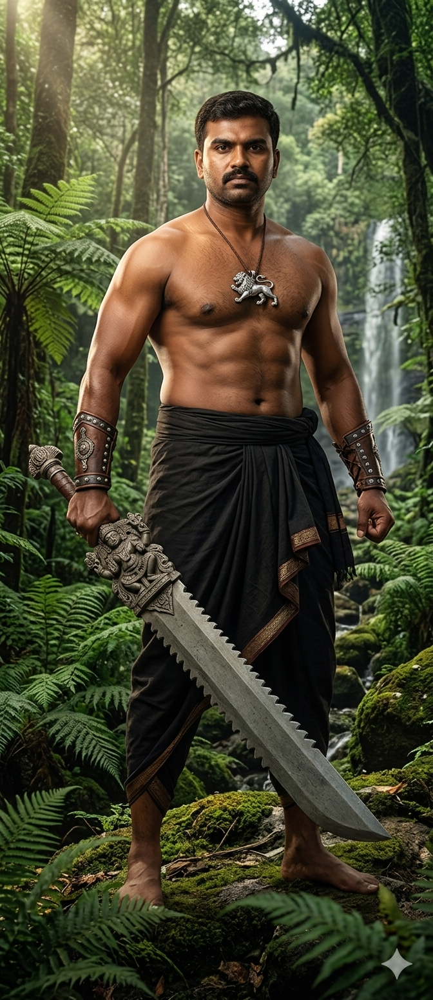
Built like the pillars of Belur — broad-shouldered, immovable, with skin the colour of seasoned teak. A warrior-scholar who moves through the forest as though the trees know him. He carries the Hoysalastra, a heavy serrated broadsword forged from the dark magnetite of the Baba Budan hills, and the weight of the Malenad in his very gait.
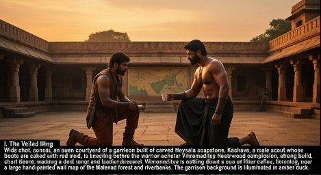
The report arrived at the edge of the Malenad wilderness, carried by a scout whose skin was stained with the deep rot of jungle peat and whose eyes were wide with a primal fear. He found Vikramaditya at the foot of a moss-covered hero-stone, where the warrior was meticulously cleaning his weapon — Hoysalastra, a heavy, serrated broadsword forged from the dark magnetite of the Baba Budan hills.
“The Kalinga Sarpa are gone,” the scout whispered.
Vikramaditya did not look up immediately. He was a man built like the pillars of Belur — broad-shouldered, immovable, with skin the colour of seasoned teak. He was a descendant of the Hoysala guards, and he carried the weight of the forest in his very gait. He set aside his whetstone and looked at the scout. “The King Cobras do not simply leave, Karthik. They are the soul of the rain. If they vanish, the Malenad dies.”
Karthik, the lead ranger of the Agumbe perimeter, showed him a map. The sightings of the Kalinga Sarpa — some reaching lengths of twenty feet, their hoods etched with patterns like temple friezes — had ceased entirely near the riverbanks of the Yagachi.
Vikramaditya traced the geography. His mind went to the legends of Belur Chennakeshava, the “Beautiful Keshav,” whose temple was said to have a twin — a structure lost not to war, but to the shifting white sands and the encroaching emerald tide of the forest.
“They aren’t migrating. They are returning to the source. Assemble the scouts. We head into the heart of the mist at dawn.”
— Vikramaditya
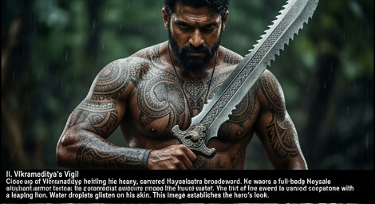
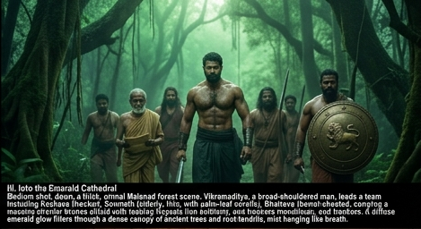
The Malenad at dawn was a world of suffocating green. Leeches waited on every leaf, and the canopy was so thick that the sun was a mere myth. Vikramaditya led a team of eight: Karthik and three trackers, a temple architect named Somnath who specialised in Hoysala geometry, and Bhairava, a massive warrior who carried a shield embossed with the leaping lion of the Hoysalas.
They tracked the “Kalinga” trails. The King Cobras were leaving distinctive marks in the mud, but they were all heading in a single file — an impossibility for a creature so territorial. Somnath, the architect, pointed to the ground. “Look at the alignment, Vikramaditya. They aren’t following the river. They are following the Vastu of the earth itself.”
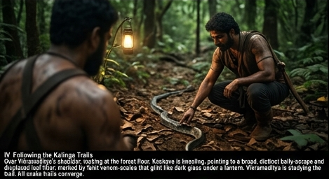
On the third day, they reached a clearing where the trees seemed to pull back in reverence. In the centre sat a mound of white sand, out of place in the dark jungle soil. A massive King Cobra, its hood flared to the size of a war-shield, stood atop the mound. It looked at Vikramaditya with eyes that held the wisdom of centuries. It did not strike. It simply turned and slid into a gap between two buried stones.
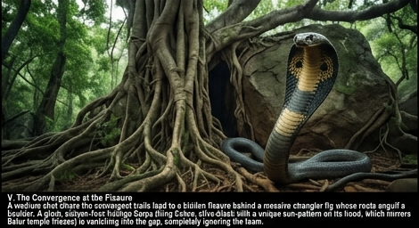
“This is it. The lost shrine of the Yagachi.”
— Somnath, brushing sand from a soapstone lintel carved with a dancer
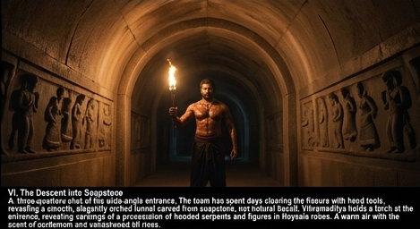
It took three days of silent, manual labour to clear the entrance. Vikramaditya forbade the use of iron shovels near the carvings, using only wooden tools to peel back the sand. As the doorway emerged, they realised it wasn’t just a shrine; it was a masterpiece that rivalled Chennakeshava.
The architecture was distinctly Hoysala — a star-shaped base, intricate lathe-turned pillars, and Madanika figures that seemed ready to step off the walls. But as they descended, the air changed. It didn’t smell of damp earth; it smelled of ancient cardamom and sandalwood oil.
Vikramaditya held a torch aloft. The light hit the pillars, and the stone seemed to glow. These were not the dark granites of the north, but the soft, malleable soapstone that hardened with age. The walls were covered in carvings of the Naga — serpent deities with human torsos, their tails winding around the base of the temple like a living foundation.
“Wait. Listen.”
A low vibration hummed through the floor. Vikramaditya knelt and pressed his ear to the soapstone. It wasn’t the sound of water. It was the sound of thousands of scales moving in unison. — Bhairava
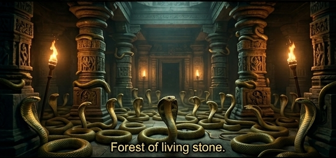
They entered the Mahamandapa — the great hall. It was a forest of stone. Every pillar was unique, carved with such detail that the jewellery on the stone figures could be seen to dangle. But the floor was hidden.
Thousands of Kalinga Sarpa lay coiled in the shadows. They filled the niches, draped over the beams, and circled the central pedestal. In the centre of the room sat a relic: a Chakra made of pure, translucent jade, spinning slowly in a shaft of light that came from a hidden ventilation duct in the ceiling.
The snakes were the guardians. They were not there to hunt; they were there to vibrate. Their constant, low-frequency humming kept the jade Chakra in motion.
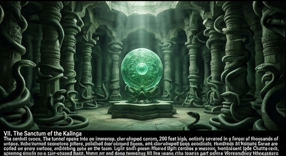
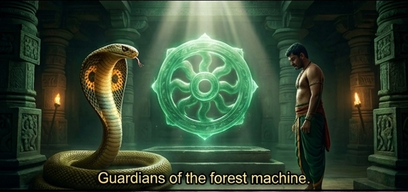
“The Nagavamsha didn’t build this for a god. They built it to stabilise the forest. This temple is a machine, Vikramaditya. It controls the rainfall of the entire Malenad.”
— Somnath
Vikramaditya stepped forward. The largest cobra rose, its head level with his chest. Vikramaditya did not draw Hoysalastra. He lowered his head in a gesture of Namaskara. He recognised the cobra as the true king of this domain. The serpent huffed a breath of cool air, then lowered its hood, allowing him to pass toward the jade relic.
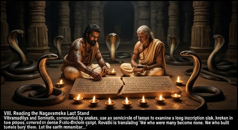
The discovery was short-lived. A week later, the perimeter scouts reported movement — not animals, but men. Collectors and “seekers of the void” who had heard rumours of the Hoysala jade.
Vikramaditya stood at the entrance of the buried temple, looking at the intricate carvings of the Madanikas — the stone beauties who had watched over the silence for a millennium. He knew that if the world found this place, the jade would be stolen, the snakes slaughtered, and the Malenad would wither into a desert.
“We cannot hold this place against an army,” Bhairava argued, his shield ready. “We must take the jade to the city.”
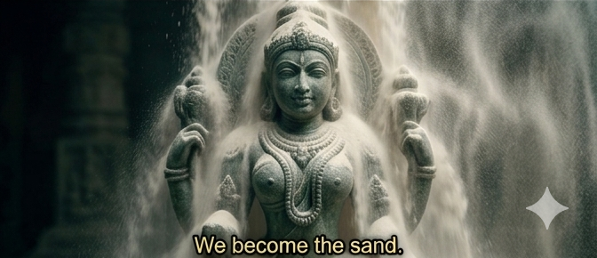
“No. The jade belongs to the Kalinga. The Kalinga belong to the Malenad. We do not take the treasure. We become the sand.”
— Vikramaditya
He ordered the team to retreat. Using the very mechanisms Somnath had discovered, they triggered a controlled collapse of the outer sand-retaining walls. The white sands of the Yagachi poured back over the soapstone dancers, the lathe-turned pillars, and the jade Chakra.
Vikramaditya stood until the last gap was closed. He watched the great Kalinga Sarpa slip back into the shadows of the earth, safe once more.
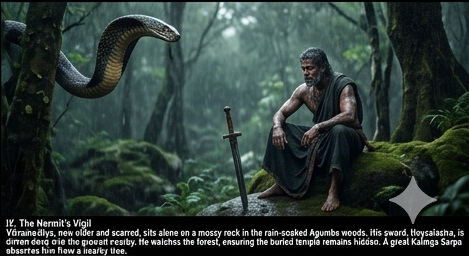
He returned to the Malenad as a man who owned nothing but his sword and a secret. He would spend the rest of his days as a “mad” hermit of the Agumbe woods, a silent guardian ensuring that no one ever dug too deep into the white sands of the Yagachi. The King Cobras had returned, the rains continued to fall, and the Beautiful Keshava of the forest remained a dream buried in the green.
The Temple Waits
The jade Chakra still spins. The serpents still vibrate. The Malenad still receives its rains.
And somewhere in the Agumbe, a scarred warrior watches the forest with the patience of stone.
Descendant of Hoysala guards. Bearer of the Malenad’s oldest secret. Now a hermit of Agumbe.
First to report the disappearing Kalinga Sarpa. Veteran tracker who spent three days in the tunnel when the shadows came.
Specialist in Hoysala geometry. Deciphered the Nagavamsha inscription. Understood the jade Chakra as a machine, not a relic.
Carries a shield embossed with the leaping Hoysala lion. Argued for taking the jade. Accepted the burial without question.
King Cobras of the Malenad. Their vibration keeps the jade Chakra spinning, and the rains falling across Karnataka.
Collectors who heard rumours of the Hoysala jade. Their hunger for the relic nearly ended the Malenad’s rainfall forever.